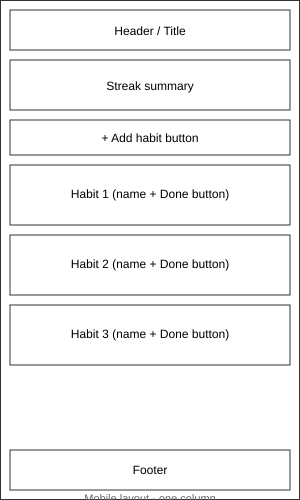

Purpose and Audience
This app helps a person track daily habits, like drinking water or reading, by letting them check off habits each day and see their current streak.
The audience is students who want a simple way to build good habits without using a big, complicated app.
Dynamic Elements (JavaScript)
- Each habit is stored as an object: name, streak, and done or not.
- All habits are stored together in an array.
- Clicking "Done" on a habit updates that habit and re-shows the list (DOM event).
- An if/else checks whether the habit was already done today.
-
forEach()is used to show each habit on the page. -
reduce()is used to count how many habits are done today. - The code is split into a few small functions instead of one big one.
Pseudocode
habits = [ { name, streak, done }, ... ]
function showHabits():
for each habit in habits:
show habit name, streak, and a Done button
show total habits done today
function markDone(habit):
if habit.done is false:
habit.done = true
habit.streak = habit.streak + 1
showHabits()
function addHabit(name):
if name is not empty:
add new habit to habits array
showHabits()Wireframe
Mobile-first layout. Everything is in one column and stacks top to bottom.
